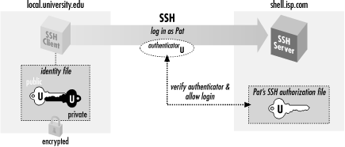

2.4. Authentication by Cryptographic Key
In
our
running
example, the user pat is authenticated by the SSH server via login
password.
Passwords, however, have serious
drawbacks:
- In order for a password to be secure, it should be long and random,
but such passwords are hard to memorize.
- A password sent across the network, even protected by an SSH secure
channel, can be captured when it arrives on the remote host if that
host has been compromised.
- Most operating systems support only a single password per account.
For shared accounts (e.g., a superuser account), this presents
difficulties:
- Password changes are inconvenient because the new password must be
communicated to all people with access to the account.
- Tracking usage of the account becomes difficult because the operating
system doesn't distinguish between the different users of the
account.
To address these problems, SSH supports
public-key
authentication: instead of relying on the password scheme
of the host operating system, SSH may use cryptographic
keys. [
Section 3.2.2, "Public- and Secret-Key Cryptography"] Keys are more
secure than passwords in general and address all the weaknesses
mentioned earlier.
2.4.1. A Brief Introduction to Keys
A key is a digital identity. It's a unique string of binary
data that means, "This is me, honestly, I swear." And
with a little cryptographic magic, your SSH client can prove to a
server that its key is genuine, and you are really you.
An SSH identity uses a pair of keys, one private and one public. The
private key is a closely guarded secret only you have.
Your SSH clients use it to prove your identity to servers. The
public key is, like the name says, public. You place
it freely into your accounts on SSH server machines. During
authentication, the SSH client and server have a little conversation
about your private and public key. If they match (according to a
cryptographic test), your identity is proven, and authentication
succeeds.
The following sequence demonstrates the
conversation between client and
server. [
Section 3.4.1, "Establishing the Secure Connection"] (It occurs behind the scenes, so
you don't need to memorize it or anything; we just thought you
might be interested.)
- Your client says, "Hey server, I'd like to connect by SSH
to an account on your system, specifically, the account owned by user
smith."
- The server says, "Well, maybe. First, I challenge you to prove
your identity!" And the server sends some data, known as a
challenge,
to the client.
- Your client says, "I accept your challenge. Here is proof of my
identity. I made it myself by mathematically using your challenge and
my private key." This response to the server is called an
authenticator.
- The server says, "Thanks for the authenticator. I will now
examine the smith account to see if you may enter."
Specifically, the server checks smith's public keys to see if
the authenticator "matches" any of them. (The
"match" is another cryptographic operation.) If so, the
server says, "OK, come on in!" Otherwise, the
authentication fails.
Before you can use public-key authentication, some setup is required:
- You need a private key and a public key, known collectively as a
key pair. You also need a secret passphrase to
protect your private key. [Section 2.4.2, "Generating Key Pairs with ssh-keygen"]
- You need to install your public key on an SSH server machine. [Section 2.4.3, "Installing a Public Key on an SSH ServerMachine"]
2.4.2. Generating Key Pairs with ssh-keygen
To use cryptographic authentication, you must first generate a key
pair for yourself, consisting of a private key (your digital identity
that sits on the client machine) and a public key (that sits on the
server machine). To do this, use the
ssh-keygen
program. Its behavior differs for SSH1, SSH2, and OpenSSH. On an SSH1
system, the program is called
ssh-keygen or
ssh-keygen1.
When you invoke it,
ssh-keygen creates an
RSA
key pair and asks you for a secret passphrase to protect the private
key.
[8]
$ ssh-keygen1
Initializing random number generator...
Generating p: ..................................++ (distance 1368)
Generating q: ....++ (distance 58)
Computing the keys...
Testing the keys...
Key generation complete.
Enter file in which to save the key (/home/pat/.ssh/identity):
Enter passphrase: **************
Enter the same passphrase again: **************
Your identification has been saved in identity.
Your public key is:
1024 35 11272721957877936880509167858732970485872567486703821636830\
1950099934876023218886571857276011133767701853088352661186539160906\
9214986989240214507621864063548908730298546478215446737245984456708\
9631066077107611074114663544313782992987840457273825436579285836220\
2493395730648451296601594344979290457421809236729 path@shell.isp.com
Your public key has been saved in identity.pub.
On SSH2 systems, the command is either
ssh-keygen
or
ssh-keygen2,
and its behavior is a bit different and produces either a
DSA
key (the default) or an RSA key:
$ ssh-keygen2
Generating 1024-bit dsa key pair
1 ..oOo.oOo.oO
2 o.oOo.oOo.oO
3 o.oOo.oOo.oO
4 o.oOo.oOo.oO
Key generated.
1024-bit dsa, created by pat@shell.isp.com Mon Mar 20 13:01:15 2000
Passphrase : **************
Again : **************
Private key saved to /home/pat/.ssh2/id_dsa_1024_a
Public key saved to /home/pat/.ssh2/id_dsa_1024_a.pub
The OpenSSH version of
ssh-keygen also can produce
either RSA or DSA keys, defaulting to RSA. Its operation is similar
to that of
ssh-keygen1.
Normally,
ssh-keygen performs all necessary
mathematics to generate a key, but on some operating systems you
might be asked to assist it. Key generation requires some random
numbers, and if your operating system doesn't supply a
random-number generator, you may be asked to type some random text.
ssh-keygen uses the timings of your keystrokes to
initialize its internal random-number generator. On a 300-MHz Pentium
system running Linux,
generating a 1024-bit RSA key takes about
three seconds; if your hardware is slower than this or heavily
loaded, generation may take significantly longer, up to a minute or
more. It can also take longer if the process runs out of random bits,
and
ssh-keygen has to wait to collect more.
ssh-keygen then creates your local SSH directory
(
~/.ssh for SSH1 and OpenSSH or
~/.ssh2 for SSH2) if it doesn't already
exist, and stores the private and public components of the generated
key in two files there. By default, their names are
identity and
identity.pub
(SSH1, OpenSSH) or
id_dsa_1024_a and
id_dsa_1024_a.pub (SSH2). SSH clients consider
these to be your default identity for authentication purposes.
WARNING:
Never reveal your private key and
passphrase to anyone else. They are
just as sensitive as your login password. Anyone possessing them can
log in as you!
When created, the identity file is readable only by your account, and
its contents are further protected by encrypting them with the
passphrase
you supplied during generation. We say "passphrase"
instead of "password" both to differentiate it from a
login password, and to stress that spaces and punctuation are allowed
and encouraged. We recommend a passphrase at least 10 -15 characters
long and not a grammatical sentence.
ssh-keygen has numerous options for managing keys:
changing the passphrase, choosing a different name for the key file,
and so forth. [
Section 6.2, "Creating an Identity"]
2.4.3. Installing a Public Key on an SSH ServerMachine
When passwords are used for
authentication, the host operating system maintains the association
between the username and the password. For cryptographic keys, you
must set up a similar association manually. After creating the key
pair on the local host, you must install your public key in your
account on the remote host. A remote account may have many public
keys installed for accessing it in various ways.
Returning to our running example, you must install a public key into
the "pat" account on
shell.isp.com. This is done by editing a
file in the SSH configuration directory:
~/.ssh/authorized_keys
for SSH1 and OpenSSH
[9] or
~/.ssh2/authorization for SSH2.
For SSH1 or OpenSSH, create or edit
the file
~/.ssh/authorized_keys and append your
public key, i.e., the contents of the
identity.pub file you generated on the local
machine. A typical
authorized_keys file contains
a list of public key data, one key per line. The example contains
only two public keys, each on its own line of the file, but they are
too long to fit on this page. The line breaks inside the long numbers
are printing artifact; if they were actually in the file, it would be
incorrectly formatted and wouldn't work:
1024 35 8697511247987525784866526224505474204292260357215616159982327587956883143
362147028876494426516682677550219425827002174890309672203219700937187777979705864
107549106608811204142046600066790196940691100768682518506600601481676686828742807
11088849408310989234142475694298520575977312478025518391 my personal key
1024 37 1140868200916227508775331982659387253607752793422843620910258618820621996
941824516069319525136671585267698112659690736259150374130846896838697083490981532
877352706061107257845462743793679411866715467672826112629198483320167783914580965
674001731023872042965273839192998250061795483568436433123392629 my work key
These are RSA public keys: the first number in each entry is the
number of bits in
the key, while the second and third are RSA-specific parameters
called the
public
exponent and
modulus. After these comes an arbitrary amount
of text treated as a comment. [
Section 8.2.1, "SSH1 Authorization Files "]
For SSH2, you need to edit two files, one on the client machine and
one on the server machine. On the client machine, create or edit the
file
~/.ssh2/identification and insert a line to
identify your private key file:
IdKey id_dsa_1024_a
On the server machine, create or edit the file
~/.ssh2/authorization, which contains
information about public keys, one per line. But unlike SSH1's
authorized_keys file, which contains copies of
the public keys, the
authorization file lists
only the filename of the key:
Key id_dsa_1024_a.pub
Finally, copy
id_dsa_1024_a.pub from your local
machine to the remote SSH2 server machine, placing it in
~/.ssh2.
Regardless of which SSH
implementation you use, make sure your remote SSH directory and
associated files are writable only by your account:
[10]
# SSH1, OpenSSH
$ chmod 755 ~/.ssh
$ chmod 644 ~/.ssh/authorized_keys
# OpenSSH only
$ chmod 644 ~/.ssh/authorized_keys2
# SSH2 only
$ chmod 755 ~/.ssh2
$ chmod 644 ~/.ssh2/id_dsa_1024_a.pub
$ chmod 644 ~/.ssh2/authorization
The SSH server is picky about file and directory permissions and may
refuse authentication if the remote account's SSH configuration
files have insecure permissions. [
Section 5.4.2.1, "Acceptable permissions for user files"]
You are now ready to use your new key to access the "pat"
account:
# SSH1, SSH2, OpenSSH; output shown is for SSH1
$ ssh -l pat shell.isp.com
Enter passphrase for RSA key 'Your Name <you@local.org>': ************
Last login: Mon May 24 19:44:21 1999 from quincunx.nefertiti.org
You have new mail.
shell.isp.com>
If all goes well, you are logged into the remote account.
Figure 2-2 shows the entire process.

Figure 2-2. Public-key authentication
Note the similarity to the earlier example with
password authentication. [
Section 2.2, "Remote Terminal Sessions with ssh"] On the surface, the only difference is that
you provide the passphrase to your private key, instead of providing
your login password. Underneath, however, something quite different
is happening. In password authentication, the password is transmitted
to the remote host. With cryptographic authentication, the passphrase
serves only to decrypt the private key to create an authenticator.
[
Section 2.4.1, "A Brief Introduction to Keys"]
Public-key authentication is more secure than password authentication
because:
- It requires two secret components -- the identity file on disk,
and the passphrase in your head -- so both must be captured in
order for an adversary to access your account. Password
authentication requires only one component, the password, which might
be easier to steal.
- Neither the passphrase nor the key is sent to the remote host, just
the authenticator discussed earlier. Therefore, no secret information
is transmitted off the client machine.
- Machine-generated cryptographic keys are infeasible to guess.
Human-generated passwords are routinely cracked by a
password-guessing technique called a dictionary
attack. A dictionary attack may be mounted on
the passphrase as well, but this requires stealing the private key
file first.
A host's security can be greatly increased by disabling
password authentication altogether and permitting only SSH
connections by key.
2.4.4. If You Change Your Key
Suppose you have generated a key pair,
identity
and
identity.pub, and copied
identity.pub to a bunch of SSH server machines.
All is well. Then one day, you decide to change your identity, so you
run
ssh-keygen a second time, overwriting
identity and
identity.pub.
Guess what? Your previous public key file is now invalid, and you
must copy the new public key to all those SSH server machines again.
This is a maintenance headache, so think carefully before changing
(destroying!) a key pair. Some caveats:
 |  |  |
| 2.3. Adding Complexity to the Example |  | 2.5. The SSH Agent |